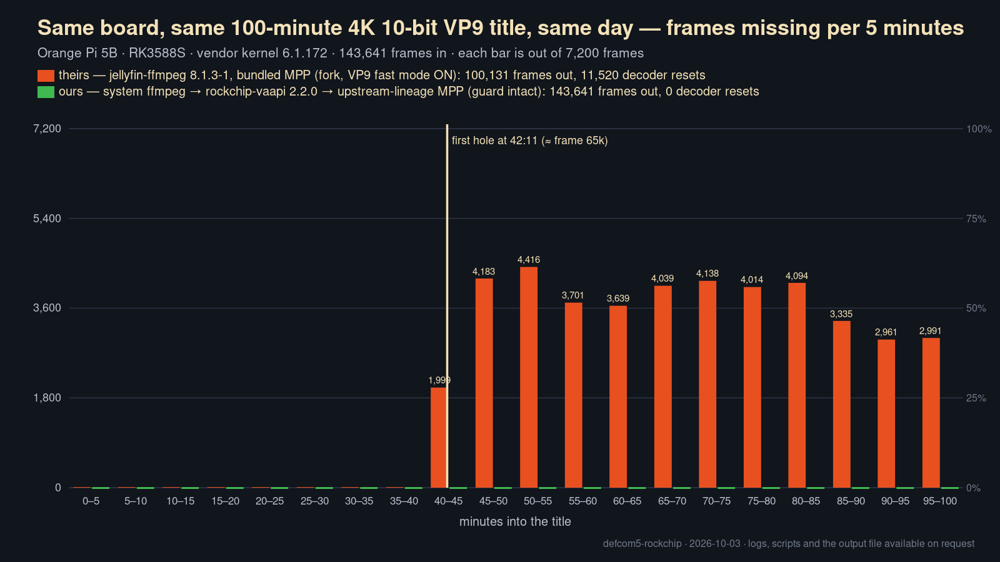

10-bit VP9 frame loss on RK3588
The MPP video library bundled with jellyfin-ffmpeg silently drops about 30 % of a long 10-bit VP9 transcode on RK3588 boards. One reverted line causes it. Measured 3 October 2026 on an Orange Pi 5B; nobody outside this bench has reproduced it yet, and that is the thing this page is asking for.

What a user sees
A long title transcodes perfectly for about forty minutes, then starts freezing for up to six seconds at a time, repeatedly, for the rest of playback. Nothing appears in the Jellyfin log. ffmpeg reports no errors and exits cleanly. The container's timestamps still span the full runtime, so the player shows the correct duration with holes in it. It looks exactly like a bad file or a failing disk.
Underneath, the video decoder is faulting and the kernel is resetting it hundreds of times a minute. Frames decoded during each reset are never produced, and nothing in the API says so.
The cause: one reverted line
Rockchip disabled parallel VP9 decode for the RK3588 upstream in August 2023, in hal_vp9d. The fork of MPP that jellyfin-ffmpeg builds from reverts that guard:
cfg->support_fast_mode = 1;
if (mpp_get_soc_type() == ROCKCHIP_SOC_RK3588)
- cfg->support_fast_mode = 0; // upstream: one decode task at a time
+ cfg->cfg->status.hal_task_count = 2; // fork: two, across both decoder cores
That is the only behavioural change to the VP9 decoder among the eleven commits the fork carries above upstream. jellyfin-ffmpeg pins it in builder/scripts.d/50-rkmpp.sh, identically on 7.1.4-3 and every 8.x release including the current one.
The guard is VP9-specific on purpose
Worth stating, because it rules out the obvious alternative — that the chip simply cannot decode two things at once. It can, for HEVC. Every H.265 path in MPP enables parallel decode on this SoC with no exception, in both upstream and the fork. VP9 is the only codec Rockchip guards here. The measurements agree: HEVC Main 10 ran 70,464 frames clean, zero resets, on the very library that fails on VP9 at around 65,000.
Measurements
| Decoder path | Input | Frames out / in | Resets | What ffmpeg said |
|---|---|---|---|---|
jellyfin-ffmpeg 8.1.3-1, bundled MPP | synthetic 1080p60 VP9 Profile 2, 72,600 frames | 71,382 / 72,600 | 70 | “0 decode errors”, exit 0 |
| system ffmpeg → VA-API → upstream-lineage MPP | the same clip | 72,600 / 72,600 | 0 | clean, exit 0 |
jellyfin-ffmpeg 8.1.3-1, full pipeline to a file | real 4K24 VP9 Profile 2 title, 143,641 frames | 100,131 / 143,641 | 11,520 | 0 error lines, exit 0 |
| system ffmpeg → VA-API → upstream-lineage MPP | the same title | 143,641 / 143,641 | 0 | clean, exit 0 |
All on one Orange Pi 5B, RK3588S, Armbian vendor kernel 6.1.172, both decoder cores verified evenly loaded. The failure begins after roughly 65,000 frames in a single job: about 18 minutes at 60 fps, about 45 at 24. Short items never reach it, because every job starts a fresh decoder.
The synthetic clip matters: it is a testsrc2 pattern at 1080p, so the trigger is the number of frames decoded in one session — not 4K, not HDR metadata, not any particular file.
Not affected
HEVC Main 10, 8-bit H.264 and VP9, direct play (which never touches the server's decoder), and anything short. VP9 Profile 2 sources are mostly YouTube-origin HDR downloads, which is why libraries rarely hit this and why it looks like a bad file when they do.
Reproduce it in ten minutes
Any RK3588 board with jellyfin-ffmpeg and a 10-bit VP9 file longer than about 20 minutes. To make one:
ffmpeg -f lavfi -i "testsrc2=size=1920x1080:rate=60:duration=1210,format=yuv420p10le" \
-c:v libvpx-vp9 -profile:v 2 -pix_fmt yuv420p10le -deadline realtime \
-cpu-used 8 -row-mt 1 -b:v 1500k test.webmThen watch the kernel while it decodes:
sudo journalctl -k --since now -f | grep --line-buffered 'resetting for err' &
/usr/lib/jellyfin-ffmpeg/ffmpeg -c:v vp9_rkmpp -i test.webm -an -f null -Compare the final frame= against the file's real frame count (ffprobe -count_packets -select_streams v:0 -show_entries stream=nb_read_packets test.webm). On an affected build the resets begin partway through and the count comes up short. On an unaffected MPP the numbers match and nothing is printed.
A negative result is just as useful. If your board stays silent and the frame counts match, please say so — everything on this page was measured on one bench, by one person, and that is its main weakness.
Fix and workaround
- Fix: drop the revert, restoring
support_fast_mode = 0for RK3588. Measured cost on a real title: about 106 fps instead of 120, because one decode task runs at a time. A rebuilt library with only that change decoded 116,787 frames with zero resets. - Workaround without rebuilding:
echo 1 > /proc/mpp_service/rkvdec-core1/disable_work— one decoder core, clean to 115,062 frames, roughly 17 % slower.
Scope beyond Jellyfin
The same revert is carried by the two Ubuntu PPAs most RK3588 desktop images use for MPP, so browsers and players on those images meet it too during long 10-bit VP9 playback — YouTube HDR at 4K60 reaches the threshold in about eighteen minutes. Pi-Desktop 4.0 ships an upstream-lineage MPP with the guard intact and is not affected; that is the green line in the chart.
Reports and corrections
Filed as jellyfin/jellyfin-ffmpeg#765 and rockchip-linux/mpp#972. The first could not be reproduced by the maintainer and was closed; upstream MPP is not at fault, so the second was closed too. An earlier version of my evidence table had two mislabelled rows; both issues now carry a correction, and the corrected figures are the ones on this page.
Logs, the test scripts, the frame-gap analysis and frame grabs from either side of the failure are available on request.
An LLM assistant (Claude) did the source analysis and wrote the test harness; the hardware testing and the measurements are mine, and I am responsible for them.